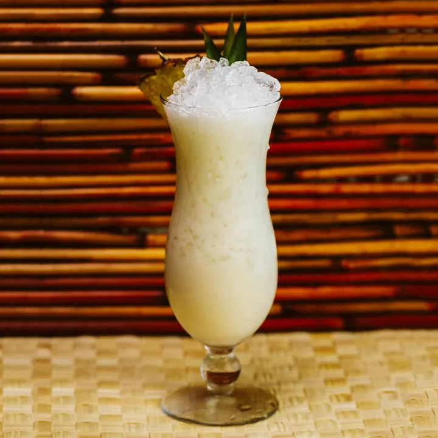

Piña Colada Recipe

Description
The Piña Colada has a bit of a bad rap among cocktail connoisseurs. For years, this now-classic drink was the poster child of the blender boom, a symbol of poolside bars and booze cruises. But the tropical cocktail—a mix of rum, coconut, pineapple and lime juices—dates to the 1950s and has been satisfying vacationers and Tiki aficionados since.
Ingredients
- 60ml light rum
- 160ml cream of coconut
- 160ml pineapple juice
- 15ml freshly squeezed lime juice
- Garnish: pineapple wedge
- Garnish: pineapple leaf
Steps
- Add the rum, cream of coconut and pineapple and lime juices to a shaker with ice and shake vigorously for 20 to 30 seconds.
- Strain into a chilled Hurricane glass over pebble ice.
- Garnish with a pineapple wedge and pineapple leaf.